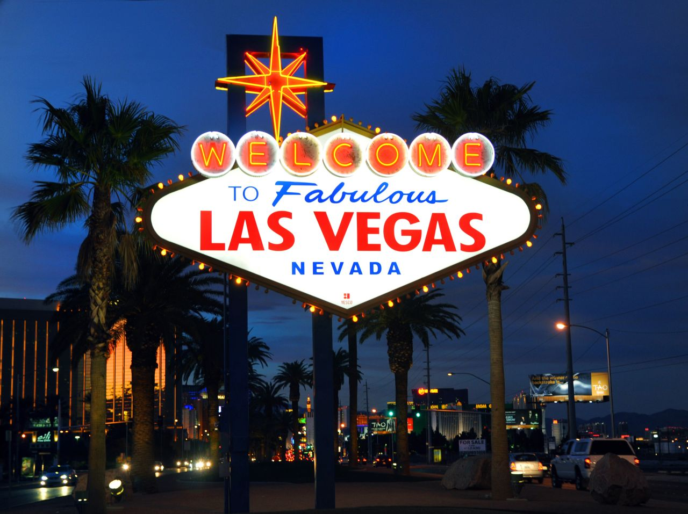
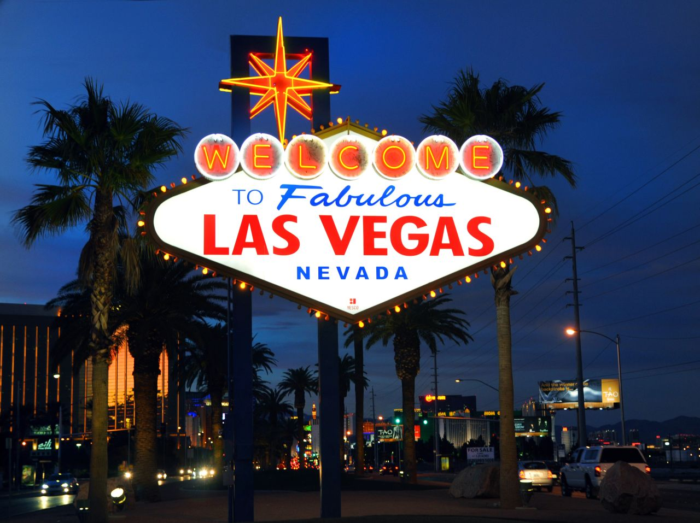

Welcome from the State capital, Carson City, NV!
Located in the western part of Nevada, Carson City is the capital of this state. It is known for it's rich history in mining and railroads. Carson City is also home to the Nevada State Museum, which showcases the state's history and culture. This city is located right below another well known city in Nevada that is named Reno. This city was inhabited by the Washoe tribe for thousands of years. .

Demographics and Population Statistics
Carson City is the smallest metropolitan statistical area. As of 2024, there has been an estimated 58,000 people that reside in Carson City. The racial makeup of Carson City is roughly 81% white, 2% black, 2.4% Native American, 2% Asian, 0.2% Pacific Islander, and 9.4% other races. Approximately 30% of households have children under the age of 18 living with them, with 50% of those households having married parents. The median age in 2024 is 39 years old.
Economics
There is data from a census that occurred in 2000 that indicates the median income for a household in Carson City was $41,800. Approximately 10% of the population and 6.9% of families were living below the poverty line. Nowadays, Carson City is the #1 best place to live in , according to US.News. The median home value in the city is $394,480 compared to the national average of $370,489. Workers in the Carson City Metropolitan area had an average hourly wage of in May of 2024. Median income in 2023 was $72,000, which was 5.2% less than the median income across the entire state of Nevada. This city has a lot of rural areas as well as suburban areas. Carson City was established as a community in 1858. This community was named for a famous frontiersman by the name Christopher "Kit" Carson.


Weather
Weather in carson City can be harsh and unforgiving, featuring cold semi-arid climate. That means that the winters are very cold, and the summers are very hot. With an average of 14 inches of snow, this city experiences modest snowfall. The most snowfall in a given year occurred between July of 1951 to June of 1952 with a staggering 82 inches.